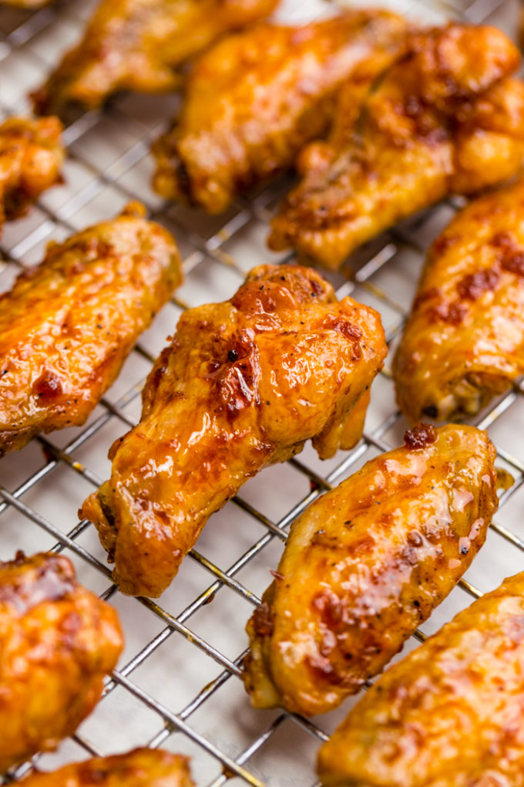

Crispy Baked Chicken Wings

Delicate and enticing flavors, properly crispy wings, what more could you ask for? Absolutely delicious.
Ingredients
Buffalo Sauce
- 1 tablespoon unsalted butter, melted
- ¼ teaspoon cayenne pepper
- ¼ teaspoon freshly ground black pepper
- ¼ teaspoon kosher salt
- ¼ cup hot pepper sauce (such as Frank's)
Ginger Soy Glaze
- 1 2-inch piece of ginger, peeled, sliced
- 3 large garlic cloves, crushed
- ¼ cup honey
- 2 tablespoons soy sauce
Wings
- 5 pounds chicken wings, tips removed, drumettes and flats separated
- 2 tablespoons vegetable oil
- 1 tablespoon kosher salt
- ½ teaspoon freshly ground black pepper
Directions
- Mix butter, cayenne pepper, black pepper, and
salt in a medium bowl; let stand 5 minutes.
Whisk in hot sauce; keep warm.
- Bring ginger, garlic, honey, soy sauce, and ¼
cup water to a boil in a small saucepan,
stirring to dissolve honey. Reduce heat to low;
simmer, stirring occasionally, until reduced
to ¼ cup, 7-8 minutes. Strain into a medium
bowl. Let sit 15 minutes to thicken slightly.
- Preheat oven to 400°. Set a wire rack inside 2 large
rimmed baking sheets. Toss chicken wings, vegetable oil,
salt, and pepper in a large bowl to coat. Divide wings
between prepared racks and spread out in a single layer.
- Bake wings until cooked through and skin is crispy, 45-50 minutes.
- Line another rimmed baking sheet with foil; top with a
wire rack. Add half of wings to ginger-soy glaze and
toss to evenly coat. Place wings in a single layer on
prepared rack and bake until glaze is glossy and lightly
caramelized, 8-10 minutes.
-
Toss remaining half of wings in Buffalo sauce. Serve immediately (no need to bake them).
Original recipe found on bon appétit